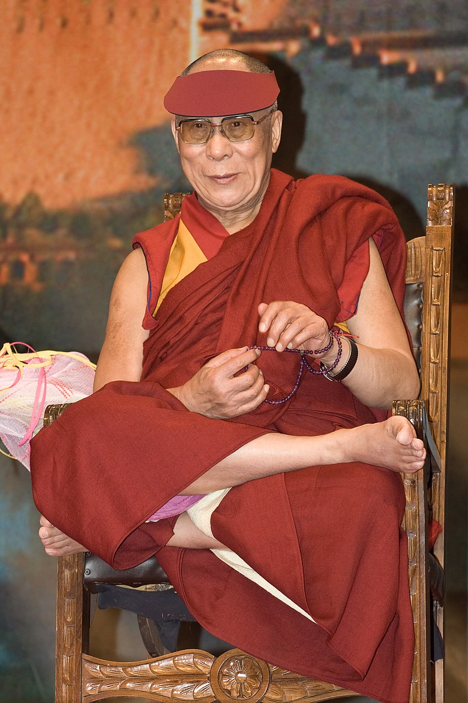

El Dalái Lama (de la palabra mongola dalai, «océano», y de la tibetana lama, «maestro reencarnado» o «gurú») es el título que obtiene el dirigente de la Administración Central Tibetana y el líder espiritual del lamaísmo o budismo tibetano. Es el término utilizado en el budismo tibetano y en la religión bön para referirse a aquel maestro que ha logrado tener el control parcial o total en la muerte sobre la forma de su reencarnación, y el conocimiento del lugar de su nuevo nacimiento. El actual dalái lama es Tenzin Gyatso (6 de julio de 1935, 86 años).
